The Hidden Language
Here's a number that should stop every workforce strategist in their tracks. In TechSTL's latest tech jobs report, the single fastest-growing job category in the St. Louis region wasn't software developer. It wasn't data scientist. It wasn't AI engineer. It was "business operations specialists, all other," a catch-all bucket that grew 122% year over year to become the number one tech occupation in the region with 4,878 postings.
Read that category name again. Business operations specialists, all other. That's not a job title. That's a confession. It's the Bureau of Labor Statistics admitting, in the driest bureaucratic language imaginable, that it doesn't have a name for what's happening.
TechSTL Executive Director Emily Hemingway put it plainly: "This is a really broad category of jobs, which means that we're seeing the categories of positions that are blurring." She's right, and the blurring isn't slowing down. It's accelerating. Because AI isn't just creating new jobs; it's dissolving the boundaries between existing ones.
The Taxonomy Trap
The U.S. labor market runs on two classification systems that were built for a world that no longer exists. The BLS Standard Occupational Classification system and O*NET together maintain roughly 1,016 occupation codes, each with neatly defined duties, skills, and education requirements. These taxonomies are the foundation of everything: workforce projections, education planning, funding decisions, hiring algorithms, and policy debates about which jobs are "growing" and which are "declining."
The problem is that these systems were designed to categorize stable jobs in stable industries. They update on multi-year cycles. They assume that a "software developer" today does roughly what a "software developer" did three years ago when the last revision was published. They assume occupations have boundaries.
AI just erased the boundaries.
When a marketing manager uses AI to write code that automates a reporting pipeline, are they a marketer or a developer? When a nurse uses an LLM to analyze patient data patterns and recommend protocol changes, are they clinical staff or a data analyst? When a project manager builds a custom AI agent to handle stakeholder communications, are they managing projects or engineering software? The answer, increasingly, is yes. All of it. Simultaneously. And the BLS has no code for that.
As Hemingway noted, "Every job is becoming a tech job, and that workforce regardless of the industry is now having to really meet that demand." That's not a prediction; it's an observation about what's already happened. The 55 tech occupations TechSTL tracks are no longer a separate workforce. They're a set of capabilities bleeding into every occupation in the economy.
The Map Is Not the Territory
The BLS knows it has a problem. In 2025, alongside its latest employment projections, the bureau released a new suite of skills data tables, an implicit acknowledgment that occupation codes alone can't capture how work is actually changing. Their own research shows that 60% of jobs will see significant task-level changes due to AI integration. New roles like AI trainers, AI ethicists, and prompt engineers are emerging faster than any taxonomy can absorb them.
But here's where it gets interesting. The BLS is trying to bolt skills data onto an occupation-based framework, like adding GPS to a horse-drawn carriage. The frame itself is the problem. We don't need better job categories. We need to stop leading with job categories entirely and start leading with skills.
And that shift, the one everyone says they want but nobody seems to know how to make, is hiding in the last place anyone thought to look.
The Rosetta Stone Was There All Along
A remarkable study published in Nature Scientific Data did something nobody in workforce development had thought to do at scale. Researchers applied natural language processing to over three million course syllabi from nearly three thousand U.S. higher education institutions. What they found was a hidden layer of skills language embedded in every course description, every assignment prompt, every learning outcome, a direct mapping to the Department of Labor's detailed workplace activities.
When a syllabus describes a research project, the underlying competencies are information literacy, critical analysis, academic writing, and project management. When a general education course requires students to "analyze primary sources and construct evidence-based arguments," it's teaching the same analytical reasoning that shows up in O*NET profiles for business analysts, policy researchers, and yes, those uncategorizable "business operations specialists, all other."
Universities already speak the language of skills. They just buried it inside the language of courses.
This isn't a minor reframing. It's a fundamental insight. Every course catalog in America is already a skills database, but it's written in a dialect that nobody in workforce development has been reading. The general education curriculum that students endure and employers ignore is actually a competency framework, encoded in learning outcomes that map directly to the workplace activities the Department of Labor uses to define occupations.
The Translation Problem
Think about what this means in practice. A student completes a philosophy course that requires "evaluating competing ethical frameworks and articulating a defended position." In the language of the university, that's three credits of humanities. In the language of the workforce, that's ethical reasoning, stakeholder analysis, and persuasive communication, skills that every AI governance role, every product management position, and every compliance function now demands.
A biology lab that requires "designing controlled experiments and interpreting statistical results" isn't just teaching biology. It's teaching experimental design, data interpretation, and hypothesis testing, the same skills that appear in data science job postings but that nobody recognizes because they came wrapped in a lab coat instead of a coding bootcamp.
The gap was never between what universities teach and what employers need. The gap was in translation. And the irony is almost painful: the institutions that have the richest skills data in their catalogs are the ones most unable to articulate it in the language the labor market speaks.
From Courses to Capabilities
Meanwhile, the labor market is moving to skills-based hiring whether the classification systems keep up or not. Nearly 65% of employers now use skills-based hiring practices, and 90% report better outcomes when they focus on skills rather than credentials. The market isn't waiting for the BLS to update its taxonomy. It's building its own.
The universities that figure this out first won't need to overhaul their curriculum. They'll need to decode it. Surface the skills that are already embedded in every syllabus. Map their general education requirements to the detailed workplace activities that employers actually hire for. Stop describing education in terms of courses and credits, and start describing it in terms of capabilities and competencies.
This isn't about adding new programs. It's about revealing what was always there. The philosophy department doesn't need an AI course. It needs to articulate that its existing courses already teach the analytical reasoning, ethical evaluation, and structured argumentation that AI governance roles require. The English department doesn't need a "technical writing" track. It needs to surface that every essay assignment is already teaching information synthesis, audience analysis, and persuasive communication.
The hidden language is already in the catalog. Someone just needs to read it out loud.
The Clock Is Running
Here's the urgency. While universities sit on the richest skills data in the country without knowing it, the BLS is scrambling to patch a taxonomy that was built for an economy of stable job titles and clear occupational boundaries. Both are trying to describe a workforce that AI has already fundamentally reshaped.
TechSTL's report captures this perfectly. The top job category is a catch-all. The traditional tech roles are shrinking while the hybrid roles, the ones that don't fit any clean classification, are exploding. The 39,432 tech job postings in the St. Louis region alone represent a workforce that has outgrown its labels.
The institutions that survive this transition will be the ones that stop defining themselves by their courses and start defining themselves by their skills. Not because it's trendy but because the alternative is to keep speaking a language that the labor market has already stopped listening to. The BLS will eventually catch up. The occupation codes will eventually be rewritten. But the universities that crack the translation now, that learn to read the hidden language in their own catalogs, will have a decade's head start on everyone still waiting for the taxonomy to be updated.
The jobs are shapeshifting. The classification systems are breaking. And the answer has been sitting in plain sight, written in every syllabus, in every course description, in every general education requirement that everyone assumed was just box-checking.
It was never a box. It was a Rosetta Stone.
Ready to decode the hidden language? Let's talk or join the conversation in Discord.